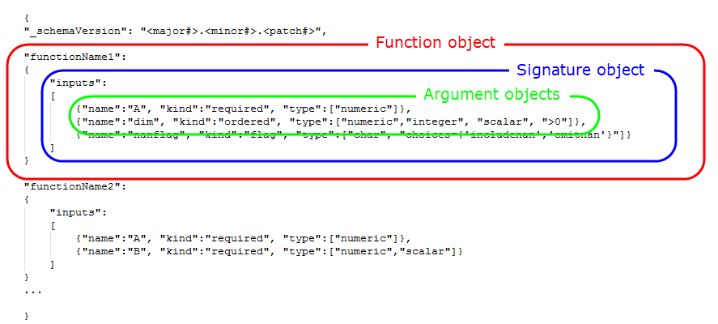
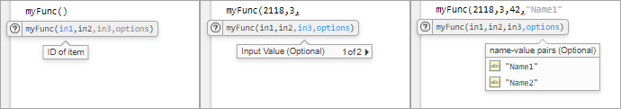
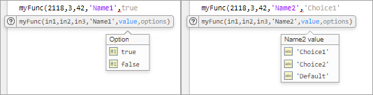

Customize Code Suggestions and Completions
To customize code suggestions and completions for your functions and classes, provide
MATLAB® with information about your function signatures. Function signatures
describe the acceptable syntaxes and allowable data types for a function. MATLAB uses this information to display code suggestions and completions in the
Editor, Live Editor, and Command Window. Define this function information in a
JSON-formatted file called functionSignatures.json. MATLAB is able to provide code completions and suggestions for functions with
arguments blocks based on the information contained in the
arguments block. This information is available without requiring a
functionSignatures.json file. Custom code suggestions and
completions are not supported in MATLAB Online.
For MATLAB to detect the function signature information, place
functionSignatures.json in a resources folder
in the folder that contains the function code. If you define information for a class
method or namespace function, place functionSignatures.json in a
resources folder in the parent folder of the outermost class or
namespace folder. For example, to define information for a method of
myClass, place functionSignatures.json in a
resources folder in myFolder for these class
and namespace structures:
myFolder/+myNamespace/@myClass myFolder/+myNamespace/+mySubnamespace/@myClass
For classes located outside of class or namespace folders, place
functionSignatures.json in a resources folder
in the folder that contains the class code. You can define signatures for multiple
functions in the same file.
The functionSignatures.json file contains a single JSON object.
JSON uses braces to define objects, and refers to objects as collections of name and
value pairs. Since these terms are overloaded in the context of function signatures,
"property" is used instead of "name." The JSON object in
functionSignatures.json contains an optional schema version and a
list of function objects. Each function object contains a list of
signature objects, and each signature object contains an
array of argument objects. JSON uses brackets to define
arrays.

To specify the optional schema version use _schemaVersion as the
first property and the version number as its value. Specify the version number as a JSON
string in the format
major#.minor#.patch#1.0.0. If the file does not specify a schema version, MATLAB assumes version 1.0.0.
If functionSignatures.json contains syntax errors, MATLAB displays an error message in the Command Window when it reads the file.
Use the validateFunctionSignaturesJSON function to validate the
functionSignatures.json file against the JSON schema and the
MATLAB function signature schema.
Function Objects
To define information for a function, create a property that is the same as the function name. Its value is a signature object.
{
"functionName1": { signatureObj1 },
"functionName2": { signatureObj2 }
}To define information for a class constructor, class method, or namespace
function, use the full name of the function or method. For example, define a class
constructor, class method myMethod, and a namespace function
myFunction.
{
"myClass.myClass": { signatureObj },
"myClass.myMethod": { signatureObj },
"myNamespace.myFunction": { signatureObj }
}You can define multiple function signatures for the same function or method by defining multiple function objects with the same property (function or method name). For more information, see Multiple Signatures.
Signature Objects
A signature object defines the input and output arguments and supported platforms
for the function. The value of each property, except for the
platforms property, is an array of argument
objects.
{
"functionName1":
{
"inputs": [ argumentObj1, argumentObj2 ]
}
}If you specify an instance method such as myClass.myMethod in
the JSON file, one of the elements in inputs must be an object of
myClass. Typically, this object is the first element.
MATLAB supports code suggestions and completions for a specified method when
you call it using either dot notation (b = myObj.myMethod(a)) or
function notation (b = myMethod(myObj,a)) syntax.
Each signature in the JSON file can include the following properties.
| Property | Description | JSON Data Type of Value |
|---|---|---|
inputs | List of function input arguments. MATLAB uses this property for code suggestions and completions. | Array of argument objects |
outputs | List of function output arguments. MATLAB uses this property to refine code suggestions and completions. | Array of argument objects |
platforms | List of platforms that support the function. MATLAB does not present custom code suggestions and completions if the platform does not support the function. The default is all platforms. Elements of
the list must match an | String of comma-separated values |
Argument Objects
Argument objects define the information for each of the input and output arguments.
{
"functionName1":
{
"inputs":
[
{"name":"in1", "kind":"required", "type":["numeric"]},
{"name":"in2", "kind":"required", "type":["numeric","integer","scalar"]}
]
}
}The order that the inputs appear in the JSON file is significant. For example, in
a call to the functionName1 function, in1 must
appear before in2.
Each argument object can include the following properties.

type – Class and/or attributes of argument

repeating – Specify argument multiple times

purpose – Description of argument
For more complicated function signatures, the following properties are available for each argument object.

platforms – List of supported platforms

tuple – Definition of set of arguments

mutuallyExclusiveGroup – Definition of set of exclusive
arguments
Create Function Signature File
This example describes how to create custom code suggestions and completions for a function.
Create a function whose signature you will describe in a JSON file in later steps. The following function accepts:
Two required arguments
One optional positional argument via
vararginTwo optional name-value arguments via
varargin
myFunc is presented to demonstrate code
suggestions and does not include argument checking.
% myFunc Example function % This function is called with any of these syntaxes: % % myFunc(in1, in2) accepts 2 required arguments. % myFunc(in1, in2, in3) also accepts an optional 3rd argument. % myFunc(___, NAME, VALUE) accepts one or more of the following name-value % arguments. This syntax can be used in any of the previous syntaxes. % * 'NAME1' with logical value % * 'NAME2' with 'Default', 'Choice1', or 'Choice2' function myFunc(reqA,reqB,varargin) % Initialize default values NV1 = true; NV2 = 'Default'; posA = []; if nargin > 3 if rem(nargin,2) posA = varargin{1}; V = varargin(2:end); else V = varargin; end for n = 1:2:size(V,2) switch V{n} case 'Name1' NV1 = V{n+1}; case 'Name2' NV2 = V{n+1} otherwise error('Error.') end end end end
In a resources folder in the same folder as
myFunc, create the following function signature
description in a file called functionSignatures.json. The
input names do not match the names in the body of myFunc,
but are consistent with the help text.
{
"_schemaVersion": "1.0.0",
"myFunc":
{
"inputs":
[
{"name":"in1", "kind":"required", "type":["numeric"], "purpose":"ID of item"},
{"name":"in2", "kind":"required", "type":["numeric"], "purpose":"# Items"},
{"name":"in3", "kind":"ordered", "type":["numeric"], "purpose":"Input Value"},
{"name":"Name1", "kind":"namevalue", "type":["logical","scalar"],"purpose":"Option"},
{"name":"Name2", "kind":"namevalue", "type":["char", "choices={'Default','Choice1','Choice2'}"]}
]
}
}
MATLAB uses this function signature description to inform code suggestions and completion.
How Function Signature Information is Used
MATLAB uses the function signature information in the JSON file to display matching syntaxes as you type. You also can complete partially typed text by pressing the Tab key. In the Command Window, MATLAB does not use the JSON file to display matching syntaxes as you type.
To experiment with code suggestions, start to call
myFunc from a script or live script. The names and
purposes from the JSON file appear. MATLAB indicates when arguments are optional and if there are
multiple suggestions available (such as the third positional argument or a
name-value argument). Name-value argument options are listed.

When adding a name-value argument to the function call, MATLAB presents the choices from the JSON file. Since
'Name1' is defined as a logical scalar, MATLAB populates the choices automatically (true
or false). MATLAB takes the three values for the 'Name2'
argument from the JSON file.

Multiple Signatures
If a function has many syntaxes, it can be helpful for code suggestions to group syntaxes as multiple function signatures (regardless of the implementation of the function). To provide code suggestions and completions for multiple signatures, create multiple function objects with the same property in the JSON file.
Consider the following function that follows different code paths depending on the class of the second input. This function is presented as an example for code suggestions, and, therefore, does not perform any computations or error checking.
function anotherFunc(arg1,arg2,arg3) switch class(arg2) case 'double' % Follow code path 1 case {'char','string'} % Follow code path 2 otherwise error('Invalid syntax.') end end
From a code suggestions perspective, consider the function as having two function signatures. The first signature accepts two required numeric values. The second signature accepts a required numeric, followed by a character or string, and finally a required numeric. To define multiple function signatures, define multiple function objects in the JSON file with the same property (function name).
{
"_schemaVersion": "1.0.0",
"anotherFunc":
{
"inputs":
[
{"name":"input1", "kind":"required", "type":["numeric"]},
{"name":"input2", "kind":"required", "type":["numeric"]}
]
},
"anotherFunc":
{
"inputs":
[
{"name":"input1", "kind":"required", "type":["numeric"]},
{"name":"input2", "kind":"required", "type":[["char"],["string"]]},
{"name":"input3", "kind":"required", "type":["numeric"]}
]
}
}Alternatively, you can define multiple function signatures using the
mutuallyExclusiveGroup property of the argument object.
Typically, it is easier and more readable to implement multiple function objects,
but using mutually exclusive groups enables reuse of common argument objects, such
as input1.
{
"_schemaVersion": "1.0.0",
"anotherFunc":
{
"inputs":
[
{"name":"input1", "kind":"required", "type":["numeric"]},
{"mutuallyExclusiveGroup":
[
[
{"name":"input2", "kind":"required", "type":["numeric"]}
],
[
{"name":"input2", "kind":"required", "type":[["char"],["string"]]},
{"name":"input3", "kind":"required", "type":["numeric"]}
]
]
}
]
}
}See Also
validateFunctionSignaturesJSON